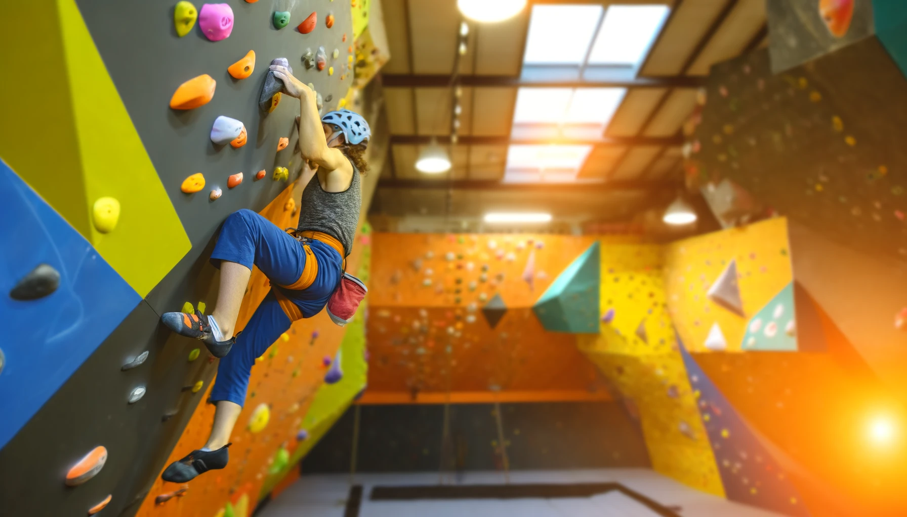

주목할 만한 뉴스
학부연구생의 노력, SCI급 저널 도전기: 졸업논문의 여정
약 1년간의 연구실 생활의 결실, 졸업논문이 국제적인 인정을 받는 SCI급 저널인 Signal Processing Letters를 향해 그 첫발을 내딛었다. 오랜 시간 동안 연구와 실험, 그리고 수정의 연속이었던 노력이 결국 한 편의 완성된 논문으로 탄생, 연구자의 손을 떠난 것이다.
이번 연구는 최신 신호 처리 기술에 대한 깊이 있는 분석과 혁신적인 접근 방식을 제시하며, 해당 분야의 전문가들 사이에서도 주목받을 것으로 기대된다. 논문의 주요 내용은 신호 처리 분야에서의 새로운 문제 해결 방법과 그 이론적 기반을 탐구하고, 실제 응용 사례를 통해 그 유효성을 입증하는 데 중점을 두었다.
논문 작성 과정은 쉽지 않았다. 연구자는 실험실에서 끝없는 시간을 보내며 데이터를 수집하고, 분석을 거듭했다. 그 과정에서 수없이 많은 도전과 실패가 있었지만, 그 모든 경험이 논문을 더욱 풍부하고 설득력 있게 만드는 데 기여했다. 또한, 지도 교수님과의 끊임없는 피드백과 조언은 연구 방향을 보다 명확히 하는 데 중요한 역할을 했다.
이제 논문은 국제적인 평가를 받기 위해 Signal Processing Letters의 심사 과정을 기다리고 있다. 이 저널은 신호 처리 분야에서의 중요한 발견과 기술적 진보를 발표하는 데 있어 선두적인 역할을 하며, SCI급 저널로서의 엄격한 심사 기준과 높은 학문적 가치를 자랑한다.
연구자는 "이번 논문 제출을 통해 제 연구가 국제적으로 인정받기를 바란다"며, "긴 연구 기간 동안 많은 것을 배웠고, 이 경험이 앞으로의 연구 생활에 큰 자산이 될 것"이라고 소감을 밝혔다.
논문이 심사 과정을 통과해 최종적으로 게재된다면, 이는 연구자에게 있어 큰 성과일 뿐만 아니라, 신호 처리 분야에 새로운 통찰을 제공하는 중요한 기여가 될 것이다. Signal Processing Letters에서의 게재 여부와 관계없이, 이번 논문 작업은 젊은 연구자가 자신의 분야에서 중요한 첫발을 내딛은 의미 있는 시작이 될 것이다.
AI: 우리 사회의 악인가, 선인가?
인공지능(AI)은 현대 사회에서 가장 혁신적이며 논쟁적인 기술 중 하나입니다. 그것은 과학 소설의 페이지를 넘어 우리의 일상생활, 산업, 심지어 의사결정 과정까지 침투했습니다. AI의 눈부신 발전은 우리에게 중요한 질문을 던집니다. AI는 우리 사회에 선을 가져다줄까요, 아니면 악의 원천이 될까요?
...더보기
추천 유튜브 콘텐츠
클라이밍의 모든 것: 초보자에서 고수까지
실내암벽등반의 기초부터 전문 기술까지, 모든 레벨의 등반가를 위한 완벽 가이드입니다. 이 비디오에서는 안전한 실내암벽등반을 즐기기 위한 팁과 기술, 그리고 커뮤니티의 중요성을 탐구합니다.
>>> 영상 보러 가기 <<<